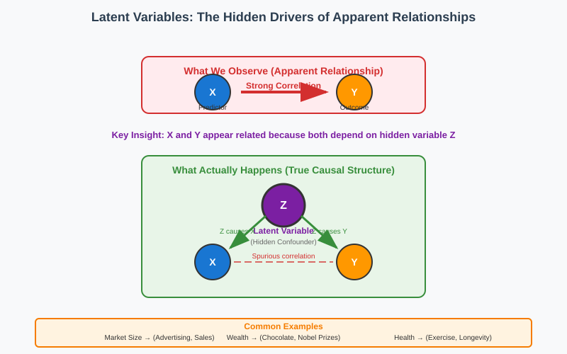
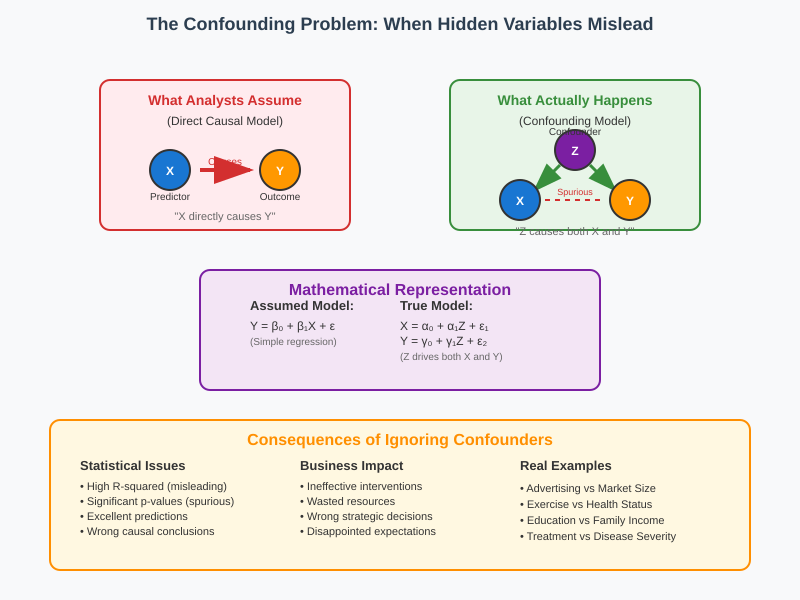
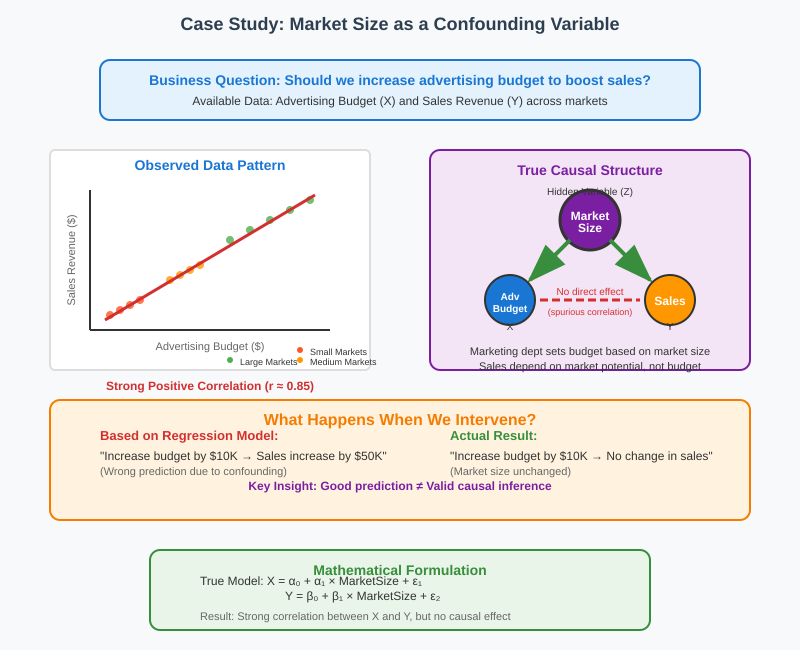
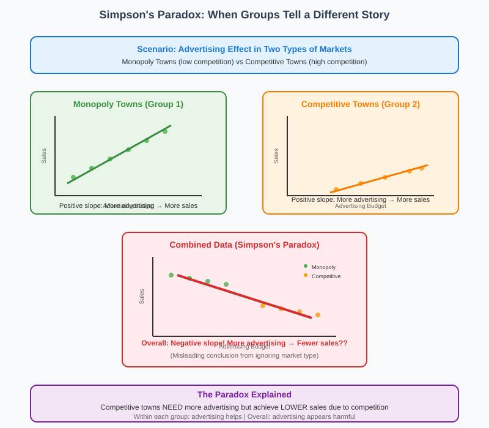
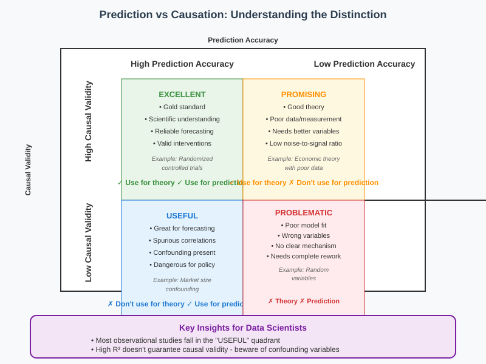

Latent Variables in Regression Analysis
📋 Quick Navigation
- 🔍 Understanding Latent Variables
- ⚠️ The Confounding Problem
- 📊 Case Study: Market Size and Advertising
- 🔄 Simpson's Paradox
- 🎯 Prediction vs Causation
- 🛠️ Detection and Mitigation Strategies
- 📚 References & Further Reading
🔍 Understanding Latent Variables
Latent variables are hidden or unobserved variables that influence the phenomena we're studying but are not included in our regression models. These variables create one of the most challenging problems in statistical analysis: distinguishing between genuine causal relationships and spurious correlations.

Definition and Characteristics
Latent Variable: A hidden variable Z that: - Influences both the predictor X and outcome Y - Is not observed or included in the model - Creates apparent relationships between X and Y - Can lead to incorrect causal inferences
The Fundamental Challenge
Observed Model: Y = βX + ε
True Model: Y = f(Z) + ε₁
X = g(Z) + ε₂
Where Z is the unobserved confounder that drives both X and Y.
Why Latent Variables Matter
| Impact Area | Consequence | Example |
|---|---|---|
| Causal Inference | Wrong conclusions about cause-effect | "Chocolate causes Nobel Prizes" |
| Policy Decisions | Ineffective interventions | Increasing advertising won't help if market size is the real driver |
| Model Validity | High R² but wrong mechanism | Perfect predictions, zero causal insight |
| Scientific Understanding | Misleading theories | Confusing correlation with causation |
⚠️ The Confounding Problem
Confounding occurs when a third variable Z influences both the predictor X and the outcome Y, creating a spurious relationship between them.

The Classic Confounding Structure
Z (Confounder) → X (Predictor)
Z (Confounder) → Y (Outcome)
This creates an apparent relationship between X and Y that is actually driven entirely by Z.
Mathematical Representation
If the true model is:
X = α₀ + α₁Z + ε₁
Y = β₀ + β₁Z + ε₂
Then regressing Y on X will yield:
Y = γ₀ + γ₁X + u
Where γ₁ ≈ (β₁α₁)/Var(X), creating a spurious correlation.
Key Characteristics of Confounding
1. Perfect Prediction, Zero Causation
- High R-squared: The model explains variance well
- Low prediction error: X strongly predicts Y
- No causal effect: Changing X doesn't change Y
2. The Intervention Test
- Observational: X and Y are correlated
- Experimental: Manipulating X has no effect on Y
- Explanation: Z drives both variables independently
Real-World Implications
Business Example: - Observation: Higher advertising budgets correlate with higher sales - Hidden variable: Market size determines both budget allocation and sales potential - Mistake: Concluding that increasing advertising will increase sales - Reality: Sales depend on market size, not advertising spend
📊 Case Study: Market Size and Advertising
This case study illustrates how latent variables can create misleading regression results in business contexts.

The Scenario
Business Question: Should we increase our advertising budget to boost sales?
Available Data: - X: Advertising budget per market - Y: Sales revenue per market
Hidden Variable: - Z: Market size (population, economic activity)
Two Competing Models
Model 1: Direct Causal Effect (Incorrect)
Advertising → Sales
Model 2: Confounding Effect (Correct)
Market Size → Advertising Budget
Market Size → Sales Revenue
The Data Generation Process
Z ~ MarketSize
X = α₀ + α₁ × Z + ε₁ (Marketing dept sets budget based on market size)
Y = β₀ + β₁ × Z + ε₂ (Sales depend on market potential)
Regression Results vs Reality
| Metric | Regression Shows | Reality |
|---|---|---|
| Correlation | Strong positive (r ≈ 0.8) | Spurious |
| R-squared | High (R² ≈ 0.64) | Misleading |
| P-value | Highly significant (p < 0.001) | Irrelevant |
| Prediction | Excellent | Accurate |
| Causation | Appears causal | Zero effect |
The Business Impact
If managers believe the regression: - Increase advertising budgets - Expect proportional sales increases - Experience disappointment when sales don't respond - Waste resources on ineffective interventions
The correct insight: - Focus on entering larger markets - Allocate resources based on market potential - Use advertising budget as a proxy for market size in predictions
🔄 Simpson's Paradox
Simpson's Paradox occurs when trends within subgroups reverse when groups are combined, often due to confounding variables.

The Advertising Paradox
Setting: Two types of markets: 1. Monopoly towns: No competition, high baseline sales 2. Competitive towns: Many competitors, low baseline sales
Within-Group Relationships
Monopoly Towns
- Baseline: High sales even with low advertising
- Effect: Advertising increases sales (positive slope)
- Reason: Market dominance amplifies advertising impact
Competitive Towns
- Baseline: Low sales despite high advertising
- Effect: Advertising increases sales (positive slope)
- Reason: Need more advertising to compete effectively
The Paradoxical Overall Trend
When combining both groups: - Observation: Higher advertising budgets correlate with lower sales - Explanation: Competitive towns require more advertising but achieve lower sales - Paradox: Individual positive relationships become overall negative relationship
Mathematical Explanation
Group 1 (Monopoly): Y₁ = 100 + 2X₁ + ε₁
Group 2 (Competitive): Y₂ = 50 + 2X₂ + ε₂
But: X₂ > X₁ (competitive towns advertise more)
So: Overall regression shows negative slope!
Detection and Prevention
Warning Signs
- Counterintuitive overall relationships
- Known subgroup structure in data
- Theory predicts positive but data shows negative
Solutions
- Stratified analysis: Analyze groups separately
- Include group indicators: Add dummy variables for market type
- Mixed-effects models: Account for group-level variation
- Domain knowledge: Use theory to guide model specification
Broader Applications
Simpson's Paradox appears in: - Medical studies: Treatment effects across patient subgroups - Educational research: Intervention effects across schools - Economic analysis: Policy effects across regions - Marketing analytics: Campaign effects across customer segments
🎯 Prediction vs Causation
Understanding the distinction between predictive accuracy and causal inference is crucial for proper interpretation of regression results.

The Prediction-Causation Matrix
| Model Quality | Prediction Accuracy | Causal Validity | Use Case |
|---|---|---|---|
| Excellent | High | High | Scientific understanding + forecasting |
| Useful | High | Low | Forecasting only (common with confounding) |
| Problematic | Low | High | Theory building (needs better data) |
| Useless | Low | Low | Needs complete rework |
What Regression Can vs Cannot Tell Us
What Regression CAN Determine
✅ Statistical Associations - Strength of linear relationships - Predictive accuracy (R-squared, RMSE) - Statistical significance (p-values)
✅ Predictive Performance - Out-of-sample prediction accuracy - Model fit diagnostics - Variable importance for prediction
✅ Conditional Relationships - Relationships within subgroups - Interaction effects - Non-linear patterns
What Regression CANNOT Determine
❌ Causal Direction - Whether X causes Y or Y causes X - Direction of influence
❌ Confounding Effects - Whether relationships are spurious - Impact of unmeasured variables
❌ Intervention Effects - What happens if we change X - Policy or treatment impacts
The Hierarchy of Evidence
1. Randomized Experiments
↓ (Gold standard for causation)
2. Natural Experiments
↓ (Quasi-experimental designs)
3. Observational Studies with Causal Methods
↓ (Instrumental variables, regression discontinuity)
4. Observational Regression
↓ (Correlation, prediction only)
5. Anecdotal Evidence
When to Trust Causal Interpretations
Strong Evidence for Causation
- Randomized controlled trials
- Natural experiments (random assignment by nature)
- Instrumental variables (valid instruments available)
- Temporal precedence (cause precedes effect)
Weak Evidence for Causation
- Cross-sectional observational data
- Many potential confounders
- Complex systems with feedback loops
- No theoretical mechanism
Practical Guidelines
For Prediction Tasks
- Focus on out-of-sample performance
- Use cross-validation and test sets
- Include all useful predictors
- Optimize for prediction metrics
For Causal Inference
- Think carefully about confounders
- Use causal inference methods
- Seek experimental or quasi-experimental variation
- Test causal theories with multiple approaches
🛠️ Detection and Mitigation Strategies
Identifying and addressing latent variable problems requires systematic approaches combining statistical methods with domain knowledge.
Detection Strategies
1. Theoretical Analysis
- Domain expertise: What variables could affect both X and Y?
- Literature review: What confounders have others identified?
- Causal diagrams: Draw directed acyclic graphs (DAGs)
- Mechanism thinking: How could X actually influence Y?
2. Statistical Diagnostics
| Method | Purpose | Interpretation |
|---|---|---|
| Residual analysis | Check for patterns | Systematic patterns suggest omitted variables |
| Stability tests | Test across subgroups | Different coefficients suggest confounding |
| Sensitivity analysis | Vary model specifications | Unstable results indicate confounding |
| Placebo tests | Use non-causal X variables | Significant effects suggest confounding |
3. Data-Driven Approaches
- Principal Component Analysis: Identify latent factors
- Factor analysis: Uncover underlying constructs
- Clustering analysis: Detect hidden subgroups
- Anomaly detection: Find unusual patterns
Mitigation Strategies
1. Include Additional Variables
Original: Y = β₀ + β₁X + ε
Extended: Y = β₀ + β₁X + β₂Z + γ'W + ε
Where Z is the suspected confounder and W are additional controls.
2. Subgroup Analysis
Group 1: Y₁ = β₀₁ + β₁₁X₁ + ε₁
Group 2: Y₂ = β₀₂ + β₁₂X₂ + ε₂
Analyze relationships within homogeneous subgroups.
3. Instrumental Variables
Find variables that: - Affect X but not Y directly - Are uncorrelated with confounders - Provide exogenous variation in X
4. Natural Experiments
- Regression discontinuity: Sharp cutoffs in treatment
- Difference-in-differences: Before/after, treatment/control
- Event studies: Exogenous shocks or policy changes
Best Practices Checklist
Before Analysis: - [ ] Draw causal diagram with potential confounders - [ ] List all variables that could affect both X and Y - [ ] Check data collection process for selection bias - [ ] Review relevant literature for known confounders
During Analysis: - [ ] Include theoretically important control variables - [ ] Test model stability across subgroups - [ ] Perform sensitivity analysis with different specifications - [ ] Check for non-linear relationships and interactions
After Analysis: - [ ] Interpret results cautiously - [ ] Distinguish prediction from causation in conclusions - [ ] Acknowledge limitations and potential confounders - [ ] Suggest experimental designs for causal validation
For Policy/Business Decisions: - [ ] Consider pilot experiments before full implementation - [ ] Monitor outcomes after interventions - [ ] Be prepared for null or unexpected effects - [ ] Maintain healthy skepticism about causal claims
📚 References & Further Reading
📖 Core Textbooks
- Pearl, J. (2009). Causality: Models, Reasoning, and Inference (2nd ed.). Cambridge University Press.
-
The definitive guide to causal inference and confounding variables
-
Angrist, J. D., & Pischke, J. S. (2014). Mastering 'Metrics: The Path from Cause to Effect. Princeton University Press.
-
Practical guide to causal inference in economics and social sciences
-
Morgan, S. L., & Winship, C. (2015). Counterfactuals and Causal Inference (2nd ed.). Cambridge University Press.
- Comprehensive treatment of causal inference methods
🔬 Research Papers
- Simpson, E. H. (1951). The interpretation of interaction in contingency tables. Journal of the Royal Statistical Society, 13(2), 238-241.
-
Original paper introducing Simpson's Paradox
-
Rosenbaum, P. R., & Rubin, D. B. (1983). The central role of the propensity score in observational studies for causal effects. Biometrika, 70(1), 41-55.
- Foundational work on propensity score methods for confounding control
🌐 Applied Examples
- Causal Inference: The Mixtape
- Free online book with practical examples and code
-
Excellent coverage of confounding and latent variables
-
Python library for causal inference with built-in confounding checks
- Online tool for drawing and analyzing causal diagrams
🚀 Interactive Resources

Notebook Topics: - Detecting confounding variables - Simpson's Paradox examples - Causal inference with observational data - Sensitivity analysis for unmeasured confounders
📊 Classic Examples and Datasets
- Berkeley Gender Bias: Famous Simpson's Paradox case in admissions
- Smoking and Lung Cancer: Historical confounding debates
- Education and Income: Multiple confounders (ability, family background)
- Medical Treatment Effects: Patient selection and confounding